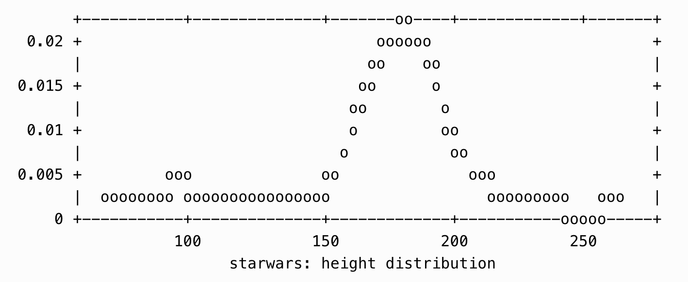
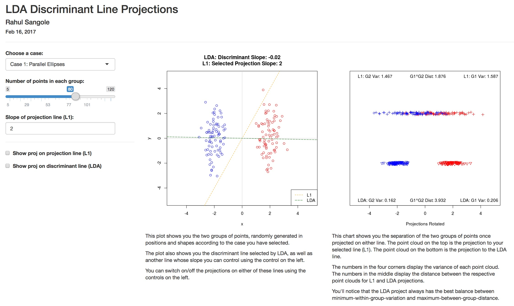
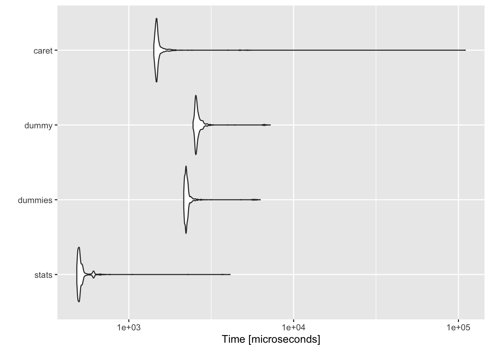

yHat
~/
~/blog
~/talks
~/astronomy
Categories
Benchmarking
Books
Docker
Factor Analysis
Flexmix
Mixture Modeling
Multivariate
Notes
Postgres
Programming Practices
Python
Shiny
TidyTuesday
Visualization
How LDA Works, Using Shiny for Python
Shiny
Python
A small Shiny for Python app exploring how LDA works
Nov 1, 2023
2023 #30DayChallenge
Visualization
A few charts related to time-series packages for the 30DayChallenge
Apr 3, 2023
Performance Benchmarking Data Read Write
Benchmarking
Which of the popular data read write methods is faster? Let’s find out.
Sep 17, 2022
Making the Anomaly Database
Docker
Postgres
This is part two of the two part post related to Docker, Postgres databases and Anomaly data-sets. Read Part 1, which teaches you how to setup a new postgres database using…
Aug 18, 2021
Docker based RStudio & PostgreSQL
Docker
Postgres
How to setup a Docker based workflow for development in RStudio with a local Postgres server, also hosted in Docker
Aug 7, 2021

Enhance ETL pipeline monitoring with text plots
Visualization
Quick visualizations in command line using {txtplot}
Jul 19, 2021
Visualizing Correlations
Visualization
Correlation plot for Kepler’s Planets, for day 13 of the 2021 30-day-chart-challenge
Apr 13, 2021
TidyTuesday - The Tate Collection
TidyTuesday
Visualization
Last week's #TidyTuesday. Had something very specific in mind & it forced me to learn a new pkg and some base R to finish this plot.
I wanted to showcase the change in the…
Jan 19, 2021
TidyTuesday - Transit Costs
TidyTuesday
Visualization
Comparing Indian rail projects to our neighbour China, I find that, on average, Indian lines have a higher number of stations and longer lines than our Chinese counterparts.
…
Jan 11, 2021
TidyTuesday - Big Mac Index
TidyTuesday
Visualization
For my first #TidyTuesday post, I've attempted a comparison of the 2015 to 2020 movement of the Big Mac index : https://t.co/AOGOvt3ve5#RStats #dataviz #r4ds #ggplot2 pic.twi…
Jan 6, 2021
Perf Benchmarking Dummy Variables - Part II
Benchmarking
Is
{fastDummies}
any better than
{stats}
to create dummy variables? Let’s find out.
Dec 16, 2020
M5 Competition Virtual Awards Ceremony
Notes
Notes from the M5 Forecasting Competition keynote speakers.
Oct 29, 2020
Reproducible Work in R
Docker
Programming Practices
A few ways I ensure my work is reproducible in R
Oct 10, 2020
Using tryCatch for robust R scripts
Programming Practices
A quick introduction to
tryCatch
below, followed by three use-cases I use on a regular basis.
Dec 20, 2018
Performance Benchmarking for Date-Time conversions
Benchmarking
Programming Practices
I have 6 methods compete against each other to figure out the fastest way to convert characters to date-time for large datasets.
Apr 12, 2018
Books I Reference
Books
A list of Data Science books I reference
Feb 13, 2018

Visualising Linear Discriminant Analyses
Shiny
Visualization
Linear Discriminant Analysis visualized using Shiny
Jan 27, 2018

Performance Benchmarking for Dummy Variable Creation
Benchmarking
How do the four popular methods of creating dummy variables perform on large datasets? Let’s find out!
Sep 27, 2017
Pur(r)ify Your Carets
Programming Practices
You’ll learn how to use
purrr
,
caret
and
list-cols
to quickly create hundreds of dataset + model combinations, store data & model objects neatly in one tibble, and…
Sep 17, 2017
Finite Mixture Modeling using Flexmix
Flexmix
Mixture Modeling
Here, I replicate the codes written by Grun & Leish (2007) in ‘FlexMix: An R package for finite mixture modelling’, University of Wollongong, Australia. My intent here was…
Feb 1, 2017
Factor Analysis of Personality Traits
Factor Analysis
Multivariate
Here, I replicate a paper end to end - survey design, data collection and analysis - by a professor from Brown Univ. The paper applies factor analysis to extract insights on…
Sep 3, 2016
No matching items